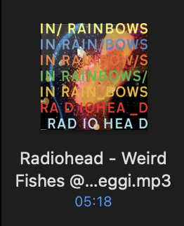
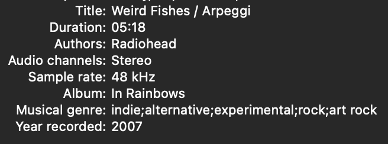

musicdl-cli
A simple CLI Spotify music downloader.
musicdl-cli lets you download tracks, albums, and playlists from Spotify by fetching freely available music videos as audio sources and using the Spotify API for accurate metadata. Note: Due to remixes and edits on YouTube, the downloaded audio may occasionally differ from the original track.



Installation
Using npm:
$ sudo npm i musicdl-cli -g
Using Git:
$ git clone https://github.com/AbhinavDhakal/musicdl-cli.git
$ cd musicdl-cli
$ npm install
$ sudo npm link
Configuration
To use musicdl-cli, you need a Spotify client ID and client secret. Get them here.
After obtaining your credentials, run:
$ musicdl-cli -c
This will show the config file location. Edit the config file to add your Spotify client ID and secret. You can also set your preferred download location.
Usage
musicdl-cli [options] <song name or Spotify URL>
-h, --help: Show help message-c: Show config file location-d <number>: Set number of parallel downloads (default: 2)-l: Download synced lyrics (if available)
Examples
Search and download a song:
$ musicdl-cli "lost frank ocean"
Download a Spotify album:
$ musicdl-cli "https://open.spotify.com/album/34GQP3dILpyCN018y2k61L"
Download a Spotify playlist:
$ musicdl-cli "https://open.spotify.com/playlist/any-playlist"
Download a Spotify track:
$ musicdl-cli "https://open.spotify.com/track/any-track"
Options
Lyrics: Add-l to download synced lyrics.$ musicdl-cli -l "joji i'll see you in 40"
Parallel Downloads: Use -d <number> to set the number of parallel downloads (default: 2).
$ musicdl-cli -l "https://open.spotify.com/album/34GQP3dILpyCN018y2k61L" -d 3
Spotify Credentials
If you don't have a Spotify client ID and secret, sign up for a Spotify developer account and create an app to get your credentials.
Tech Stack: Node.js, Spotify API, Last.fm API, FFmpeg
An open-source CLI tool on npm for music management, integrating Spotify and Last.fm APIs for metadata enrichment.